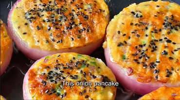

Filled onion rings

A scrumptios way to eat your onion!
The perfect way to cook your onion and your other veggies, that are just
left to die, forbidden in the bottom of your fridge
The recipe is easy to make and it takes little to no time!
ingredients
- 2 big onions
- A big carrot
- A green pepper
- An apple
- 4 eggs
- soy sauce
- salt
- pepper
- Flour
- Potato starch
Instructions
- Clean and cut into small pieces one of the onions
- Peel and do the same for the carrot
- Wash the green pepper and dice it
- Clean the apple with some salt and cut it into small pieces
- Add everything in a bowl
- Next, prepare the eggs in a bowl and stir well
-
Add the eggs in the bowl with veggies, a little salt and pepper and 1
tbl/s of soy sauce and mix well
-
Finally, add a big sppon of flour and one with potato starch and
continue to stir well. It should turn out sticky
- Get the second onion and cut it into rings
-
Add a bit of oil in a pan, add the onion rings and fill each onion ring
with the mixture of the veggie bowl
- Add a bit of sesame seeds on top of every onion
-
Cover it for about 3 minutes, then turn each onion around and repeat for
3 minutes
- Enjoy :)!
Back to main